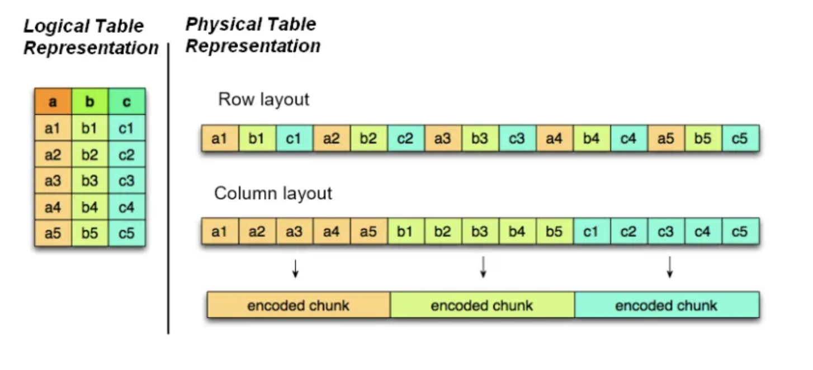

sepal <- read_csv("data/iris.csv")Data Import and Export
Thus far we have only worked with built-in data frames like starwars. To be truly useful, we need to be able to read in stored data. We also need to be able to save out our data frames for later use.
Packages
In this section, we will be using:
readr: part oftidyverse, for plain text files (.csv)
data.table: for large.csvfileshaven: for SAS (.sas7bdat,.sas7bcat) and Stata (.dta) files
arrow: for.featherand.parquetfiles.
Tip
Remember if you do not have these packages installed, call install.packages("<package_name>") in the console. Load them in scripts or the console with library(<package_name>).
Reading in data
In general, many of the functions used to read in data in R will have the read prefix.
read::read_csv(): read in.csvfilesreadxl::read_excel(): read in.xlsxor.xlsfileshaven::read_sas()read in.sas7bdator.sas7bcatfileshaven::read_stata(): read in.dtafilesreadRDS(): read in native.RDSfilesarrow::read_feather(): read in.featherfilesarrow::read_parquet(): read in.parquetfiles
The data.table::fread() function is also available for readin gin large .csv files relatively fast.
R paths
There are a few things you should know about paths in R.
- With R paths, you must use
/slashes to indicate folders within a path, not\. - You can reference up a directory using relative file paths with
../. - You can change your current directory with the
setwd("<path>")function. I recommend not to do this, as it makes it more difficult to collaborate with others. Usegetwd()to see your current directory (or look at the top of the console). - Each of the
read_*functions has arguments that can help read in the data. For example, some allow you to skip rows when reading in, only read in certain columns, set column types, and more.
Reading .csv files
For the simplest use cases, the various read functions will need just one argument: the path to the file you want to load.
I encourage the use of relative filepaths like this, but you could use the aboslute file path if you would like as well.
sepal <- read_csv("C:/Users/christopherdavis/intro-to-r/lesson_code/02_lesson/data/iris.csv")We can now work with this data frame as we would any other.
sepal |>
filter(Species == "setosa")Reading large .csv files
One function that may help speed up reading in large .csv files is the data.table::fread() function. It uses C++ under the hood to optimize reading in the data.
sas_dat <- read_sas("Data/UADAggs_nat_V3_0.sas7bdat")
stata_dat <- read_stata("data/UADAggs_nat_V3_0.dta")You can also read in xpt SAS transfer files.
xpt_dat <- read_xpt("data/UADAggs_nat_V3_0.xpt")Reading Excel Files
Reading in Excel files is a little more complicated because there are sometimes more than one sheet to work with.
To find out the excel sheets in a particular excel file, use the readxl::excel_sheets() function.
excel_path <- "data/cars.xlsx"
my_sheets <- excel_sheets(excel_path)
my_sheetsWe can then read in the data based on the excel sheet.
read_excel(excel_path,
sheet = my_sheets[1])read_excel(excel_path,
sheet = my_sheets[2])Native .RDS files
We can read in native .RDS files with the readRDS() function.
readRDS("data/UADAggs_nat_V3_0.RDS").RDS files are files specific to R and are relatively small.
Arrow: .feather and .parquet
Feather and Parquet formats are designed to be faster and more streamlined than other data formats, especially for big data (large data frames). Some estimates find them to take up at least 87 percent less space and be 34 times faster to read in as compared to .csv files. For reference, even .csv files are much faster to read into R than .sas7bdat files.
Tehse files achieve this with binary storge in columnar format as opposed to a row-based format. Each column holds values for a single attribute across all rows.

Source:Medium
Here’s the code to read in these files.
read_feather("data/UADAggs_nat_V3_0.feather")
read_parquet("data/UADAggs_nat_V3_0.parquet")Feather vs. Parquet
Both options are very fast, but Feather is faster.
Parquet is better for long-term storage and is smaller
Feather is much larger as it isn’t natively compressed (it is still 6 times smaller than its
.sas7bdatequivalent). It is also likely to change its features more often, so is less stable. It is more suitable for short-term storage or intermediary datasets.
Tip
One of the only drawbacks of using these files is that because they are in binary format, the raw data version of these files cannot be easily read by humans. That’s okay, though, we can just read them in!
Writing out data
You can similarly write out data with the following functions.
readr::write_csv(): write out.csvfileshaven::write_sas(): write out.sas7bdator.sas7bcatfileshaven::write_dta(): write_out.dtafilessaveRDS(): save native.RDSfilesarrow::write_feather(): write out.featherfilesarrow::write_parquet(): write out.parquetfiles
Writing out excel sheets is a little more complicated; we can set up a mini tutorial for that if folks are interested.
Note
These functions invisibly return the data frame, so you can add one of these rite_* functions at the end of a pipe if you’d like to assign a data frame while you are saving it out.
The janitor::clean_names() function
One of the most helpful functions to use after reading in data frames is the clean_names() function from the janitor package. Variables often are read in unstandardized and are a pain to clean up.
Names resulting from this function are unique and consist of only _, numbers, and letters.
They can be piped after reading in a data frame.
read_feather("data/UADAggs_nat_V3_0.feather") |>
janitor::clean_names() |>
glimpse()